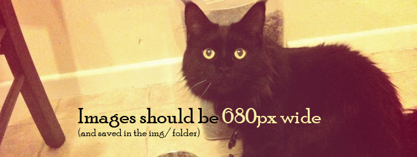
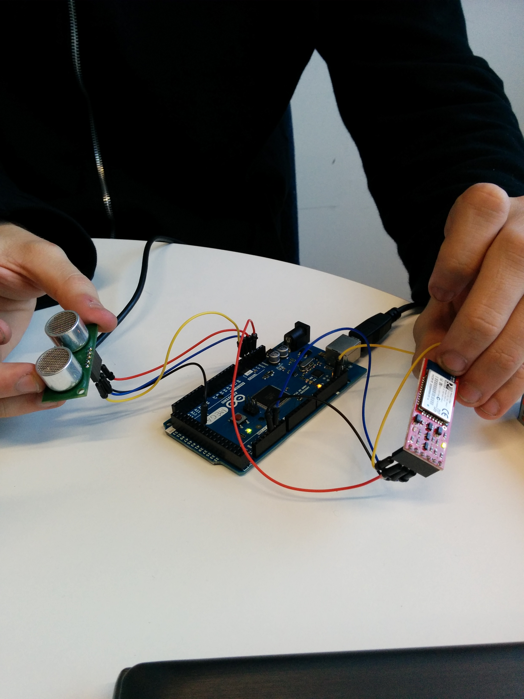
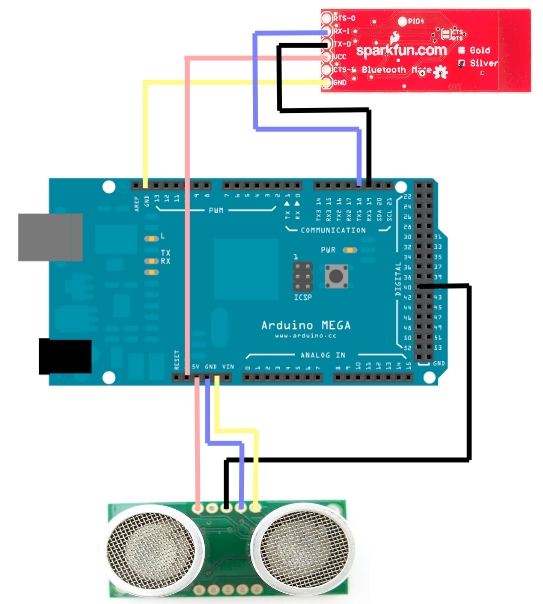
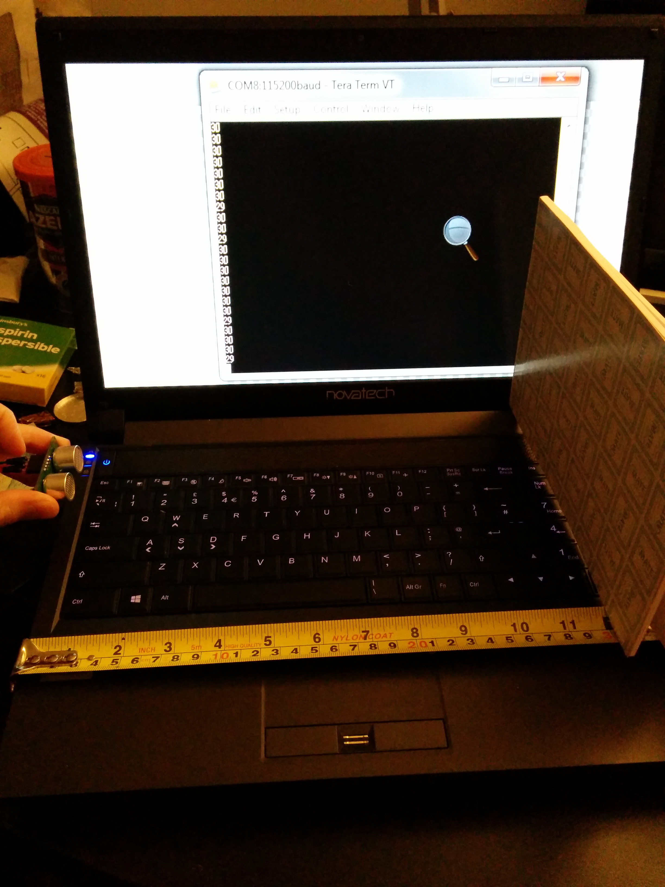
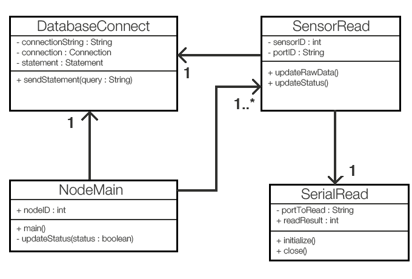
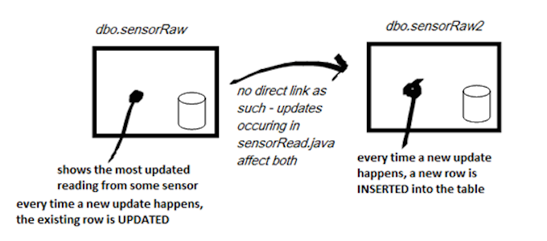

Due to the resources required to develop this system in its full form, we worked with hardware and wrote software to produce a subset of the final working implementation. This acts as our proof of concept for the design, and lays the foundations for the working-scale implementation we will build in term 2 (see Future Plans). Thus, the system we have produced prototypes the following design:

The sensor (a) in our system is modelled using an ultrasound distance finder connected to an Arduino Mega along with a Bluetooth transmitter. The node (b) is simulated by a laptop; due to unfortunate circumstances, we were unable to use a Raspberry Pi as initially planned. The database (c) is hosted using Windows Azure services, and analytics (d) were carried out on a laptop rather than a virtual machine using an API we developed. We have documented the development of each element below, and a video demonstration of the system in operation can be found at the bottom of this page.
To demonstrate our project, we created a prototype to show at a small scale what our system might look like. The demo itself consists of a sensor SRF05 Ultra-Sonic Range Finder , along with a WRL-12506 Sparkfun Bluetooth Mate Silver Transmitter and an Arduino. Below is a picture of what the final device looks like:
Picture of final prototype:

Schematics for the prototype:

How it works:
As seen in the diagram, we have an ultrasonic sensor connected to a 5V pin, a digital pin and ground pins. This allows us to use the digital pin as both our input trigger and our output echo. In our code we set the pin to be an output pin and send a small ping to the ultrasonic sensor. We then immediately switch the pin to be an input pin that measures the duration of the signal send by the sensor.
Calculating the distance based on Ultrasound reading:
The length of the sensor is equal to the amount of time it took for the ultrasound created by the sensor to hit a target and come back. This duration can then be converted into a centimeters distance. Since the speed of sound stays the same, we can determine what the distance is by using the below calculations:
Speed = Distance / Time
Speed of sound = 34'300 cm/s = 34.3 cm/ms
Since the time measurement received was there and back, we want to divide the duration by 2:
Speed = Distance / (Time/2)
17.15 = Distance / Time
Distance = 17.15 * Time
This formula will convert the duration of the echo transmitted by the sensor to a centimeter distance.
Once the distance has been calculated, we use the bluetooth transmitter to wirelessly transmit the data. The Bluetooth transmitter is connected to a 3.3V pin, a ground pin, a Tx (transmitting) pin and an Rx (receiving) pin. By sending data through the transmitting pin, we are able to send the data to a computer nearby. The computer is acting as our zone controller and handles uploading to the database.
This prototype shows what our system will most likely do, except there will be more devices doing this. The sensor can be any sensor that returns a binary/string value so it is not limited to this example.
Hardware Prototype Testing Results
From testing our hardware, we found that the ultrasound sensor was very accurate in measurements ranging from 10-200cm.
Anything beyond that and the readings would vary greatly from small movements.
The below picture shows the distance measured by the ultrasonic device, compared to the actual distance:

As seen, the measurements are accurate to with a margin of error of <= 1cm.
Arduino package, modelling a roadside sensor
The sensor hardware used here is not fully representative of what might be implemented in term 2, due to the unreliability of ultrasound distance finders being used in this context. Nonetheless, the system remains the same – the node will read in data from a sensor and transmit this via Bluetooth to its parent node (a nearby wifi-enabled processor to send the data to a database).
The code for the Arduino has a mostly empty loop, with a 'serialEvent()' function waiting to read input from the node - a request for information. The sensor will therefore take a reading if and only if a request is made to it. Consequently, the sensor will spend most of its time asleep, conserving battery life that would otherwise be spent repeatedly polling it every few milliseconds.
Additionally, when preparing data, the code takes the average of 100 readings from the sensor in order to maximise the reliability of the response. This is particularly important since the next update could potentially not occur for a number of minutes.
The data in this case is an integer value representing the distance, in centimetres, between the ultrasonic sensor and the next object in its line of sight. Processing on the raw reading (in order to convert it into a centimetre value) is carried out within the Arduino's code, as detailed in the above section. Once the data is received by the main loop, it is printed through the serial port (between the Bluetooth transmitter on the sensor and the receiver in the node (or, in this case, laptop)).
const int pingPin = 22;
byte byteRead = 3;
long cm = -1;
void setup() {
Serial.begin(115200);
}
void loop()
{
if( cm > 0 ){
Serial.println(cm);
cm = -1;
}
}
void serialEvent() {
byteRead = Serial.read();
long duration = 0;
for(int i = 0; i < 100; i++) {
/* Read measurement from sensor */
duration += pulseIn(pingPin, HIGH);
}
duration = duration/100;
cm = microsecondsToCentimeters(duration);
}
Java code modelling road-side node
The communication between the sensor and the database is handled using Java. In our original plan, this prototype was intended to be developed using a Raspberry Pi, but issues sourcing the components meant that simply running the code on a laptop was necessary. The initial development of this code, without use of the API (which was built later and is detailed below), consisted of 4 primary classes:
SerialRead is the lowest-level class, and uses the library rxtxcomm.jar to communicate with the serial port on the Arduino. It first opens a connection with a BufferedReader for input and an OutputStream for sending a request. It takes a port name as a parameter, and opens a connection to that port, pinging it with a byte as a request and then reading a line into its BufferedReader. This is a string, which is then converted to an Integer.
SensorRead uses SerialRead to make a connection to a named sensor and then upload the data to the database. It takes the sensor's ID number and string description of its associated port as parameters, and makes updates accordingly. Any given node will have one SensorRead object for each of the sensors it is connected to.
DatabaseConnect establishes a connection to the Azure SQL database and contains methods for submitting queries. Both SensorRead and NodeMain use its methods to submit UPDATE queries.
NodeMain contains the main method, and loops indefinitely whilst calling to all of its children sensors for a reading update every minute. It has exactly one SensorRead object for each sensor it's connected to, and is also responsible for reporting its operating status.

Building the SQL Database
When considering how to store the data on the network, a relational database was the obvious answer, given the need for metadata and related tables, along with online API capabilities and the scalability that comes with it. The database created for this prototype has the following design:
sensorMeta is the table holding the main identification information for each sensor, along with metadata such as its location. Every field except 'status' will be filled once when the sensor is first added to the system, and never changed.
nodes holds all metadata about the nodes on the system
sensorRaw is updated with the sensor's reading and an associated timestamp by the node
holders contains the details of every institution or entity who owns a sensor on the network.
parking is an example of a post-analytics table, which stores data relating to the type of sensor application that feeds it. In this prototype, we're using a sensor to detect a car's presence in a parking bay. Analytics can then be run on the raw data to determine related information, such as where the nearest available parking bay is. This kind of table may be most useful to developers, who will be able to access it through an API. In a full scale implementation, there would be a post-analytics table for each type of sensor application - such as pollution, wind speed, footfall, and more.
Design Approach
The design of the database had to be carried out with multiple considerations in mind, such that sufficient information could be stored for anyone wishing to use the database - whether it be developers, researchers, or maintenance administrators. The following gives some insight into the design decisions and justification behind elements of the database design, looking specifically at the sensorMeta table.
sensorID
Each sensor on the network should be accessible directly, and entered as a row in a meta data table. Consequently, a unique ID is required for each. Whilst the prototype we have developed for this proof of concept does not implement the standard, a proposed convention is as follows:
measures
This field describes the application the sensor is used for. In our PoC example, we have described ours with "Parking". Other "measures" types may include "pollution", “heat”, or "wind speed". This will be necessary for filtering which sensors will be used for particular high-level applications.
type
The hardware of each sensor should also be described, for maintenance reasons primarily. The type entered for our PoC is "UltraSonic Distance Finder", but others may include "Infrared Distance Finder" or "Accelerometer".
model
Further to the type, it may be necessary to find the model number so that references to specifications can be made. Our example holds "SRF05".
added
The date the sensor was added to the network; necessary for representing the devices history and drawing conclusions.
road, lat, and lng
Position data, critical for location-based searches and applications involving geographical analysis.
Analytics
The table “parking” is designed to store processed data from parking sensors. This exists in order to simplify and expand the API that we might be offering to developers. For instance, simply offering them access to the raw reading data, along with sensor positions, means that if they wanted to implement a function which allowed them to find the nearest available parking space, they would have to write their own code. Instead, we can carry out the analysis on a virtual machine, and keep tables like this updated with more directly usable information for developers. In some cases it may be highly necessary to provide this analysed data since there would be no reliable way to interpret it alone – for instance, testing the distance range within which a car is determined to be covering a sensor, thus occupying a space. We have designed some example fields:
occupied
Indicates whether or not the parking bay is occupied
stateDuration
Uses timestamp data to report the length of time the parking bay has been in this state (i.e. how long the currently parked car has been parked there for)
legallyParked
Uses road data along with the timestamp and checks these against a separate database containing the parking restriction details for that road. For instance, if a parking space is only available for 1 hour at a time between 9am and 5pm, and a car is determined to have been parked for 2 hours within those times, this could be flagged to either (or both) the car owner or the local traffic warden via a smartphone app.
Uploading to the Database
The database we used was hosted through Microsoft Azure, who have provided their own library for connections in Java. Sending data to the database was a simple case of forming this connection and submitting a query. This query was dynamically built using variables - for instance, to update the sensor data reading, we used the code:
Code showing query sending
This system was initially implemented within the methods in SensorRead, but ideally would be built using an API offering get/set methods for the database. This API was developed after the initial prototype, and is detailed in the next section.
Demonstration
This video demonstrates the proof of concept system taking a reading from the ultrasound sensor and sending it to the Azure database.
What was found
The PoC confirmed that our prospective system design of a local node which reads from nearby sensors via Bluetooth, and then submits their data via wifi, is viable and scalable
It was also found that Java offers full capability for reading and transmitting the data, with many libraries available for supporting communications between both the sensor and the internet
Using Java also means that it would be simple for us to develop a low-level API, and even implement it with web services to assist in building a higher-level API (potentially with JSON)
Prefab Arduinos are large and bulky, so and we must find a more reasonable hardware design with a low profile and low power consumption for our implementation next term
Considerations for the future identified by the PoC
We must provide a simplified method of adding sensors to the network – particularly without access to the nodes. Ideally, we should have the nodes running open-source code for scanning for nearby Bluetooth signals, identifying them, and deciding whether to add them automatically. An issue here is how the metadata will be added to the table upon implementation, and is something we need to consider in greater detail.
The firewall for the database prevents unrecognised addresses from accessing the contents, which may pose a problem when adding new nodes to the system. We must consider ways to work around this and simplify the process of adding nodes to the network.
The setup of a node in the environment will be vastly different to that of a laptop, and COM port communications will not work in the same way as with our PoC. It would most likely be necessary for the node to iterate through a list of its child sensors, opening and closing a single port to each and reading their results one at a time. We should research new ways to do this in order to boost efficiency.
This section will contain details about the development of the API and how it was used in analytics to fill the parking table of the database.
Extending from the creation of the Azure SQL database, and the classes created to model a sensor of a larger network transmitting data across Bluetooth and updating its' raw values to the cloud (tables: dbo.sensorRaw && dbo.sensorMeta), an API was created in order to model:
How users of the database might be granted access to the database’s raw information via getter and setter methods
How data analytics could potentially be applied to this raw information to update other tables (dbo.parking) with meaningful information in the cloud which users can then access
The API provides a sub-set of potential functionality for the specific use case of 'parking/ illegal parking'. It should be noted that, the API created is not fully representative of the implementation we plan to build next term, which will make use of the RESTful architecture style to create a web service which users can then make use of. Hence, it would be more accurate to view this prototype as an experimentation to create an interface between a client (user) and server (database).
The API can be viewed as a mock-up displaying:
Connecting to the database
Retrieving data from it
Performing analytics if necessary
Feeding data back into the database
To connect to the remote SQL database using Java, the Microsoft JDBC driver, which enables the handling of its data directly, was used. Ideally, in terms of API design, we do not want to expose too much of the inner workings of the code nor unnecessarily clutter users with implementation details they do not really need to know. For this reason, the connection string, method to connect to the database in general and method to execute SQL instructions to be performed are kept private. A range of public static methods, however, are available in the DatabaseConnect class for use.
These include:
List<SensorRaw> getSensorRaw()
Which users can use to query the database's sensorRaw table and retrieve a set of results from. In the implementation of this, the set of results comprises of the entire table as available on the cloud. Each row of the table is then treated as a sensorRaw object with each column in the row filling out the member variables e.g. sensorID of said object.
Designing data retrieval in this method means that users do not have to constantly make calls/ open a connection to the database on the cloud and instead may store a local copy of an entire table in their IDE if they wish.
A range of getter methods can then be used to retrieve data from a specified row such as:
GetSensorID() - returns sensorID of the specified row
getReadingFloat() - returns the latest reading of the sensor in question
*NOTE: Due to the experimentation of implementing some data analytics, this is no longer the case, getSensorRaw() reads from table sensorRaw2 instead of sensorRaw but in general terms, the functionality of such a method is stated above. For more information on this, see the discussion of data analytics below.
getUnit() - mostly for viewing purposes only, returns in string, the unit that the original reading float, in this case, cm was converted to
getLastUpdate() - gets the timestamp for the last time the specified sensor was updated
String toString() - returns all raw data stored in that row about a specific sensor as a string
Generally working in the same method as the above:
List<Parking> getParkingList()
Associated class with getters/ setters: Parking.java
List<SensorMeta> getSensorMetaList()
Associated class with getters/setters: SensorMeta.java
Data Analytics
For the purposes of generating some analytics through API which could then be used to populate the parking table which deals with processed data, a pseudo-table 'SensorRaw2' was designed to store the raw readings of a sensor every time it updated.
At present, the current configuration is as follows:

The main difference between the two tables can be simply defined as: where sensorRaw discards its previous data every time a new reading update is made, sensorRaw2 does not update a sensor's corresponding/ existing fields and instead adds a new entry to the table with the same sensorID and different timestamp. Dbo.sensorRaw2 thus makes use of two primary keys to generate unique entries: sensorID and lastUpdate.
Ideally, sensorRaw and sensorRaw2 would belong to different databases in the actual implementation. sensorRaw2 would be part of a local database rather than the one on the cloud for instance, and push its calculations to the cloud and the parking table.
By making use of the data available in table sensorRaw2, accessed through the two DatabaseConnect methods getSensorRawList() and it's overloading method getSensorRawList(Timestamp from) conclusions were made on whether 1. A space was occupied or not and 2. The duration of stay of a particular vehicle.
updateParking() witnessed in ParkingAnalytics.java, makes use of the readingFloat and lastUpdate(timeStamp) fields stored and provided by the sensorRaw2 table. Based upon this, a spot is determined to be occupied if the readingFloat is between 0 and 200, suggesting the presence of an object within the range of the ultrasound sensor used in the hardware prototype implementation for this proof of concept. Following this, if the value is taken 'updated' again and within the next half-minute and it is seen that there are very miniscule changes in the reading which is still in range - an assumption is made that the object is indeed stationary and that a vehicle has therefore been parked else a false flag is activated and the state 'occupied = true' is returned to false. From this point, the duration of stay is timed based on the time stamp.
These two pieces of data were successfully fed back into the parking data base on the cloud for the 'occupied' and 'occupiedStateDuration' respectively.
This code can be found on the git repos. Under the database package.
NOTE 2: To test the functionality of the API above: whether it was indeed connecting to the database and retrieving the correct data, small snippets of code were created to print out the values stored in the remote database. These can be seen commented out at the bottom of DatabaseConnect.java
The Git repository seen above was used to gather all of our written code. This includes coding for the Arduino, coding for the database, coding for the analysis and coding for the website.
Using Github has allowed us to share our code easily on our assigned sections and work together effectively on creating the website.
We didn't start using Github until later in the year and instead used a dropbox, which we now know is not as appropriate.
From now on we will only be using Github.